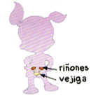

Sistemas del Cuerpo Humano 1. Observa atentamente y completa los órganos correspondientes: El sistema circulatorio transporta sangre con nutrientes o residuos a través de las 1 Selecciona y arterias, gracias a la fuerza del 2 Selecciona . El sistema respiratorio toma aire del ambiente por la 3 Selecciona y lo lleva a los 4 Selecciona a través de la 5 Selecciona .  El sistema urinario elimina los residuos de nuestro cuerpo a través de la orina que se forma en los 6 Selecciona y se almacena en la 7 Selecciona . El sistema digestivo incorpora alimentos a través de la 8 Selecciona y, con ayuda del 9 Selecciona , el hígado, y los 10 Selecciona , extrae de ellos todos los nutrientes necesarios. Evaluar Respuestas